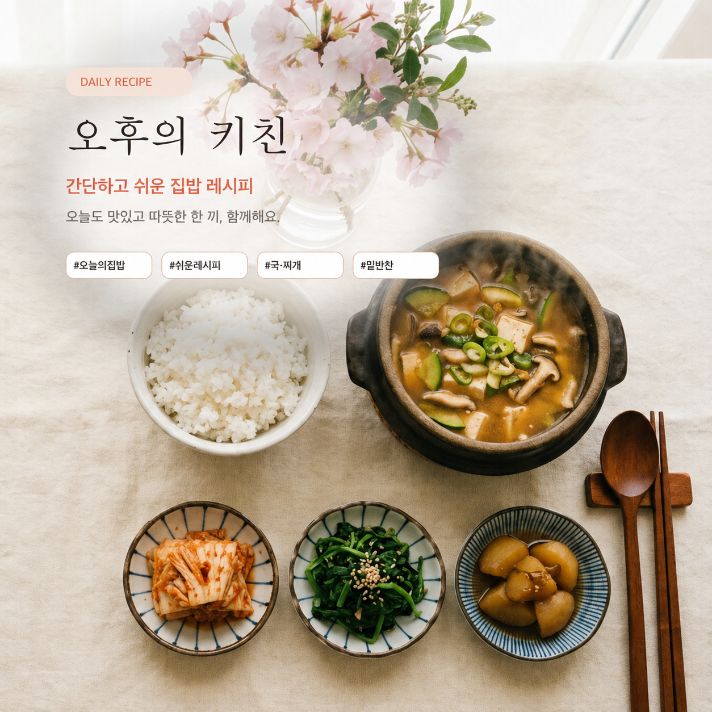

🍱 오늘의 도시락
전날 준비해 아침에 바로 담는 남편 도시락: 일주일 직장인 집밥 반찬 구성

매일 아침 바쁜 출근 시간에 도시락을 싸는 일은 결코 쉽지 않지만, 전날 저녁 10분만 투자해 밑준비를 해두면 아침에는 따뜻한 밥과 함께 쏙 담아내기만 하면 됩니다. 외식비도 아끼고 남편의 건강과 속도 편안하게 챙기는 실전 직장인 도시락 구성 노하우를 정리합니다.
1. 물기 없는 반찬이 도시락의 핵심
도시락 통 안에서 국물이 흐르면 다른 반찬과 섞여 냄새가 배고 상하기 쉽습니다.
- 볶음 반찬: 진미채볶음, 어묵볶음, 멸치볶음 등 국물이 생기지 않는 마른 반찬 1~2가지를 기본으로 깔아줍니다.
- 채소 나물: 나물을 넣을 때는 수분을 꼭 짜서 볶아낸 '절인 가지볶음'이나 '물기 짠 오이무침'을 활용합니다.
- 단백질 메인: 계란말이, 노릇하게 구운 메추리알 조림, 또는 간장 불고기를 한 칸에 채워 든든한 포만감을 줍니다.
2. 아침 10분을 줄여주는 전날 저녁 준비 루틴
- 도시락 통 세척 및 건조: 전날 밤에 통을 완전히 말려 둡니다.
- 메인 반찬 소분: 불고기나 볶음류는 전날 저녁 식사 준비 때 도시락용으로 1인분씩 밀폐용기에 따로 덜어 냉장 보관합니다.
- 계란말이/지단: 계란물은 전날 밤에 미리 풀어 냉장고에 넣어두면 아침에 바로 팬에 붓기만 하면 됩니다.
3. 질리지 않는 요일별 도시락 조합 예시
| 요일 | 메인 요리 | 곁들임 반찬 |
|---|---|---|
| 월요일 | 소불고기 덮밥 | 볶음김치, 계란프라이 |
| 화요일 | 집김밥 & 묵은지 참치김밥 | 따뜻한 보온병 된장국 |
| 수요일 | 새우젓 애호박 두부조림 | 간장 어묵볶음, 멸치볶음 |
| 목요일 | 빨간 메추리알 조림 | 꼬들 가지볶음, 김구이 |
| 금요일 | 간장 연어장 덮밥 | 생와사비, 미소된장국 |
💡 보온 도시락 팁
날씨가 쌀쌀해지면 작은 보온병에 미역국이나 소고기뭇국을 1인분 담아 함께 챙겨주면 밖에서도 집밥처럼 든든하게 먹을 수 있습니다.